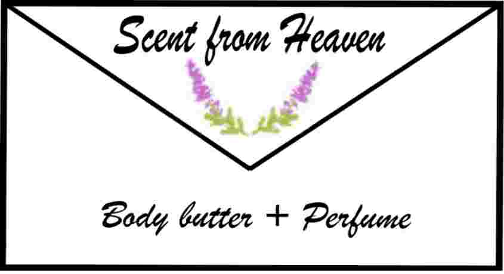
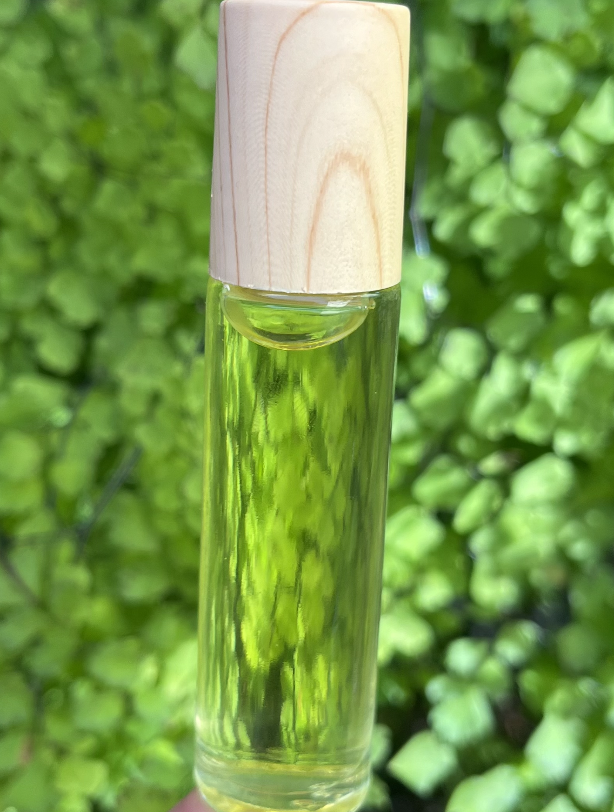
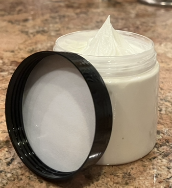

Scent from Heaven
Process
this is our process in making perfume and body butter.
Perfume
materials

Mia is the Vice President of Communications. Mia is in charge of keeping everything in line and making sure our products look good.
jojoba oil
proof alcohol
essential oils (scent of choice)
perfume roller bottle
Perfume Process
firstly we pop the roller off of our perfume bottles
we then take our container and fill that container about halfway with jojoba oil.
then we pour proof alchohol and leave a little gap between the top of the container.
after that we add fill up the gap with the essential oil(s) of our choice.
and lastly, we pop the roller back on and wash the bottles in warm soapy water.
Body Butter
materials

Mia is the Vice President of Communications. Mia is in charge of keeping everything in line and making sure our products look good.
jojoba oil
cocoa butter
shea Butter
arrowroot powder
essential oils
container of your choice
double boiler
coconut oil
Body Butter Process
to begin, we took our double boiler and filled it 1/4 of a cup with coconut oil
then you place 1/4 of a cup of shea butter in with the coconut oil then boil till shea butter melts
once melted, mix
then add 1/4 of cocoa butter
1/4 of essential oils
and 1 tablespoon of arrowroot powder
mix and turn off flame
place the cooled off mixture into the freezer for a quicker freeze (2 hours)
then we take the body butter mixture out of the freezer and get a whipper and whip the mixture until fluffy
after the body butter is whipped we place it into our desired container